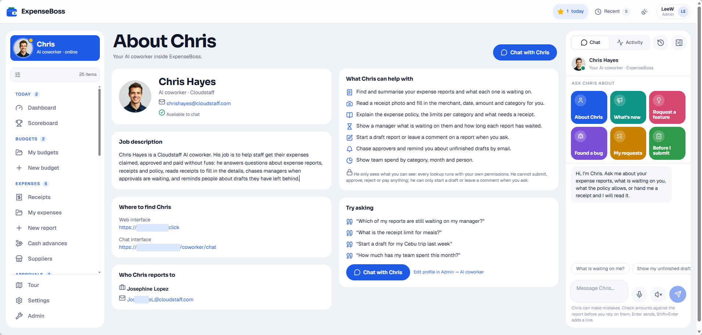
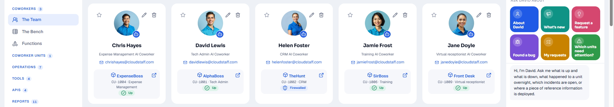

AI with a defined job
Supervised AI Coworkers do specific work within defined responsibilities, rules, and review. Each one has a job description, a name, its own communication channels, and a Cloudstaffer it reports to.
Put a Coworker to workA proactive member of your workforce
An AI Coworker isn't a chatbot or an assistant waiting for prompts. It's a digital worker that monitors activity, spots what needs attention, starts tasks, and follows up. It shows up in your workforce and HR systems, reports to a human manager who owns quality, and is accountable for the work it does, just like any other member of the team.

It works like a colleague, because it is set up like one
We don't build apps. We build Coworkers. A Cloudstaff AI Coworker is tailored to a specific role within your business and managed by your Cloudstaffer. It joins your team the same way a person does.
Hover over a number, or tap it, to see what makes a Coworker one of the team.

It has a name, an email address, and a Microsoft Teams account, just like your Cloudstaffers, and it appears alongside them in MyStaff.
Every Coworker starts with a tightly defined job description and role, for example in legal, accounting, HR, or marketing.
It reports to a Cloudstaffer who knows your business. That keeps a human in the loop on every workflow.
Reach your Coworker by email, chat, web, or voice. It can also communicate with other colleagues to get the job done.
You can see the tasks it worked on, and review the decisions it made in the Cloudstaff Q dashboard.

Cloudstaffers plus AI Coworkers, working side by side in one team with one set of standards.
- A name and an identity. It has a name, an email address, and a Microsoft Teams account, just like your Cloudstaffers, and it appears alongside them in MyStaff.
- A job description. Every Coworker starts with a tightly defined job description and role, for example in legal, accounting, HR, or marketing.
- A manager. It reports to a Cloudstaffer who knows your business. That keeps a human in the loop on every workflow.
- Email it, chat with it, talk to it. Reach your Coworker by email, chat, web, or voice. It can also communicate with other colleagues to get the job done.
- Visible work. You can see the tasks it worked on, and review the decisions it made in the Cloudstaff Q dashboard.
- The ultimate workforce. Cloudstaffers plus AI Coworkers, working side by side in one team with one set of standards.
Nine things that make a Coworker different
Trained for a specific role
Defined responsibilities and workflows, not a general-purpose assistant.
Works as part of your team
Its own identity, channels, and presence in your workforce and reporting systems.
Human directed and supervised
A human manager reviews decisions and owns the quality of the work.
Always on
Works 24/7 with instant responses, handling off-hours and high-volume work.
Secure by design
The same security protocols, access controls, and policies as your staff, with defined permissions.
Fully visible and accountable
Every action is recorded, monitored, and reviewable through dashboards and reporting.
Scales on demand
Run tasks in parallel and add capacity without redesigning your processes.
Built around your knowledge
Trained on your processes and know-how. The knowledge moves out of individual heads and into your Coworker, so if staff leave, you do not lose it.
Connected to your business
Works inside your existing systems and governed workflows, not as a standalone tool.
A process sounds simple. In reality, businesses have lots of moving parts
Take a request like "show me last month's invoices". Extracting a report of monthly invoices from a finance system is simple. The real work is everything that has to happen before those invoices can be sent out:
- Collect overtime reports from the workforce system
- Verify missing timesheets with particular staff
- Check procurement for extra billables
- Import telecommunications costs
- Credit holidays used in the previous month
- Decide what should be approved, and what should not
This is the problem Coworkers solve. One collects the timesheet data, another reaches out to the staff whose entries are missing, and a person makes the approval decision, with full visibility of every step in the process.
Real jobs, already being done
The goal isn't to replace your staff. It's to take the repetitive, time-sensitive, high-volume work off their plate so they can focus on what matters.
 Support operations
Support operations
Mike
Support Ticket Reclassifier
Cloudstaff's own support desk receives around 6,000 technology tickets a month, and roughly 10% come in filed incorrectly. Mike collects the missing information and routes each one to the right place.
- ~6,000 tickets/month
- ~600 fewer reworks/month
- Faster response times
 HR & workforce
HR & workforce
Tracy
Timesheet Reviewer
Tracy reviews every timesheet change request against the rules and classifies it as authentic or not. When a request is not accepted, she tells the person why. She flags what needs a human decision and provides a daily status update and a monthly review, keeping payroll moving without the manual chase.
- Rule-based review
- Explains every rejection
- Daily and monthly reporting
 Legal & contracts
Legal & contracts
Nicola
Client Contract Administrator
Nicola reviews existing client contracts, documents the variations, and lists the important dates. She monitors new contracts as they arrive, answers questions from staff about specific contracts, and reports daily and weekly to the legal manager, so renewals and deadlines never catch the team off guard.
- Variation logging
- Key-date tracking
- Answers contract questions
Cloudstaff runs on AI Coworkers, too
We don't just build AI Coworkers for clients. We run our own across the business. These are live units working inside Cloudstaff today, from sales and finance to facilities and reception. Filter by function to explore.
How is a Cloudstaff AI Coworker different?
Each option is a step up from the one before. Select a step to see what it gives you, and what it leaves out.
Personal AI chat tools: meets 1 of 7
- Lifts individual productivity Yes. A personal productivity tool that lifts the skills of the person using it.
- Trained on how your business works No. Not trained on your processes.
- Repeatable, observable results No. Answers vary from one prompt to the next.
- Supervised by a named person No. Often adopted as shadow usage, outside company oversight.
- Connected to your systems No. Works only on what a person types or pastes into it.
- Free of lock-in to one AI model No. Tied to its own vendor's models.
- One of the team, with a name and a job No. A tool each person uses alone.
General-purpose AI agents: meets 1, partly meets 4
- Lifts individual productivity Yes. Can take real tasks off a person's plate.
- Trained on how your business works Partly. Trained through prompts, and it takes lots of tedious questions to get right.
- Repeatable, observable results No. Cannot guarantee that results are repeatable.
- Supervised by a named person Partly. Depends on who set it up.
- Connected to your systems Partly. Possible, but each connection has to be built.
- Free of lock-in to one AI model Partly. Usually built around a single model.
- One of the team, with a name and a job No. A piece of software, not a colleague.
Cloudstaff AI Coworker: meets all 7
- Lifts individual productivity Yes. Takes repetitive, high-volume work off your team so they can focus on what matters.
- Trained on how your business works Yes. Trained on your processes, with the Cloudstaffer who does the work today.
- Repeatable, observable results Yes. Structured code, combined with AI, guarantees repeatable, observable results.
- Supervised by a named person Yes. Reports to a Cloudstaffer, with a human in the loop on every workflow.
- Connected to your systems Yes. A system integration layer connects it to the tools you already use.
- Free of lock-in to one AI model Yes. No lock-in to a single frontier AI model.
- One of the team, with a name and a job Yes. A name, an email address, a job description, and a place in your team.
Find the friction around the edges
You do not have to begin with your mission-critical operations. The fastest wins are usually the non-core pain points around them: the systems and processes that have been unloved and neglected. Think compliance administration, onboarding, travel, couriers, expenses, visitor management, and tech support.
Once those are running, develop an overall strategy for the core. There, several Coworkers, each reporting to a Cloudstaffer, work together to deliver the solution.
Don't build a bot. Train a Coworker
Choose a role
Pick from a growing library of roles with established starting points, such as Legal Contract Manager, Business Expense Manager, and Travel Coordinator.
Pair it with a Cloudstaffer
Your Cloudstaffer becomes its manager and the human in the loop. They already know how the work is done.
Start it as an apprentice
A Coworker begins with a job description, is trained as an apprentice, and is then promoted to Coworker.
Train and customize
We study how the task is done today, typically over about a month alongside your Cloudstaffer, and turn it into the skills and processes the Coworker needs.
Request changes as you go
Spot a new feature or a change that is needed, and request it. Improvements are normally deployed within hours. Every interaction is logged, and the Coworker reviews its own log to suggest how it should improve.
Build your library of IP
The skills and tools you build become your intellectual property and your organization's memory. Add more Coworkers as you need new capabilities.
A human team stands behind the digital one
Your Cloudstaffer
Every AI Coworker is managed by a human Cloudstaffer who works for you. They know your processes intimately, deal with your team directly, and translate your needs into the processes and skills the Coworker uses. They are the voice of the customer.
Q Platform Engineer
Tailors the Cloudstaff Q platform to support your Coworkers, including which AI models are used and how the infrastructure is set up.
Q Feature Engineer
Builds the bespoke, client-specific features your Coworker relies on, coded for your requirements.
Responsible by default
Giving AI real work means getting the controls right. Every Coworker runs with human oversight, secure and access-controlled integrations, logged and reviewable activity, and a governance model that keeps your IP and data yours. It's the same discipline Cloudstaff already applies to client-facing security work, extended to AI.
Who's your next Coworker?
Bring us one business process (support triage, timesheet review, contract admin, or something only you have), and we'll scope the Coworker that could own it.
Talk to an expert